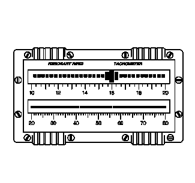

簧片式转速表由 2 排并列的簧片组成。在受到特定频率激励时，簧片会产生振动或共振。簧片按其特定的共振频率排列，共振频率范围为 10-80 Hz，从左至右依次增加。这样的排列可直观地显示该频率范围内的主频。
簧片式转速表是一个十分有用的诊断工具，但是它对与振动问题无关的外部输入极为敏感，如不平的路面等，因此其使用很难掌握。由于以上情况，簧片式转速表的诊断能力也受到限制。
由于簧片式转速表诊断能力有限、可用性有限以及成本增加，因此不建议将簧片式转速表作为主要的振动诊断工具。
诊断振动问题时，应使用
CH-51450-NVH示波器诊断组件（带 NVH）或
EL-38792-A电子振动分析仪 (EVA) 2。
CH-51450-NVH示波器诊断组件（带 NVH）或
EL-38792-A电子振动分析仪 (EVA) 2的设计克服了簧片式转速表的不足。参见
示波器诊断组件的说明与操作、
电子振动分析仪（EVA）的说明与操作。